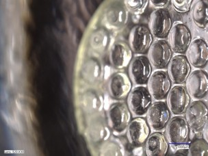
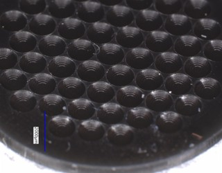
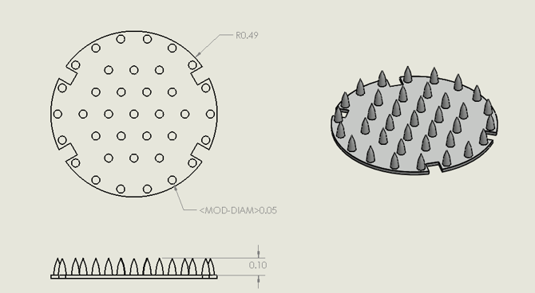
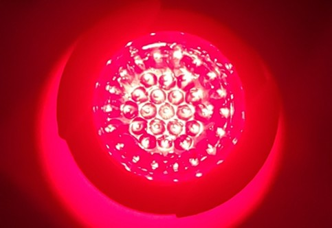
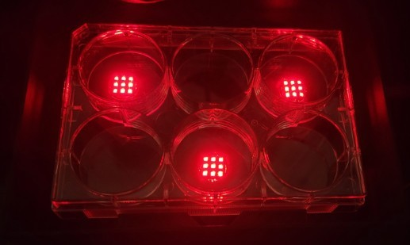
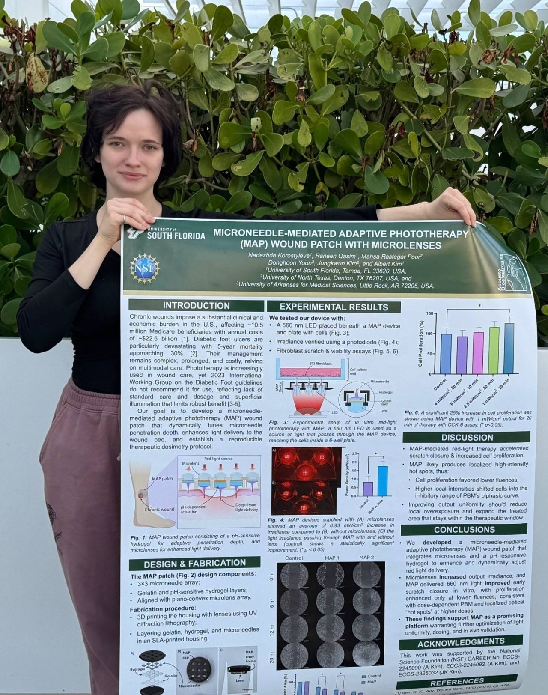

01 — The problem
Light that stops at the surface
Blue light in the 400–470 nm band is antimicrobial and does not drive resistance the way antibiotics do, which makes it attractive for infected and chronic wounds. The difficulty is delivery. Skin and eschar scatter and absorb light heavily, so surface illumination reaches only the top layer, and reaching the wound bed by turning the source up means more heat and more power than a wearable can carry.


02 — The approach
Carrying the light past the barrier
Rather than illuminating the surface harder, the patch moves the light source's output through the skin barrier mechanically. A microlens array couples LED output into microneedles that penetrate the stratum corneum, so light is released at depth instead of scattering at the surface. The result is a device that reaches the wound bed at a fraction of the optical power a surface emitter would need.
I led the project end to end: device architecture, CAD, fabrication process, and the electronics that drive the array.

03 — Fabrication and drive
Built in batches
The array is produced through a cleanroom process I developed and then ran at volume, with more than a hundred devices fabricated across design iterations. Building at that count is what made the design converge: each batch surfaced yield and assembly problems that were invisible in single prototypes.
Two failure modes dominated early builds — the device ran far too hot against skin, and drew far more power than a wearable format allows. Resolving those meant reworking both the drive circuitry and the mechanical stack rather than treating them separately, since the thermal path and the electrical design are the same problem seen from two directions.

04 — Results
Cooler, cheaper, and it works in vitro
The redesigned device runs 30 °C cooler at peak and consumes two orders of magnitude less power than the initial build, which is what moved the concept from bench demonstration to something wearable. In vitro results were strong enough to write up within the first month of the project, published as a first-author paper at IEEE MEMS 2026. The device has since advanced through in vivo validation.

05 — Published
IEEE MEMS 2026
The work was written up as a first-author conference paper and poster: device concept, design and fabrication, irradiance characterisation with and without the microlens array, and fibroblast scratch and viability assays showing accelerated closure and increased proliferation.
The useful lesson was that the thermal and power problems were not separate bugs to fix in sequence. They shared a root cause in how the array was driven, and finding that meant measuring the device rather than reasoning about it.
